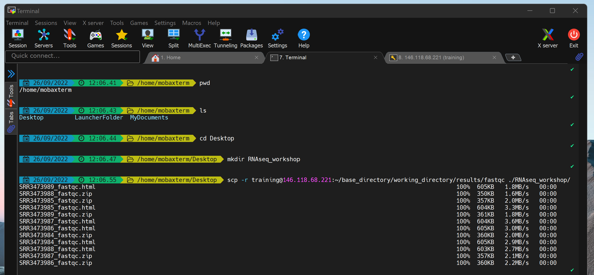

nf-core/rnaseq results
Questions
- How are the results from the nf-core/rnaseq organised?
- How can I transfer the results from Nimbus to my local computer?
Lets start by checking that the nf-core/rnaseq command has completed. Bring up the terminal window you left your command running in. If your run was successful, your terminal should display a Pipeline completed successfully message, same as the image below:

The pipeline completion message tells us some useful information including when the run finished, how long it took to run, and how many CPU hours it consumed. If you scroll up in your terminal, you’ll see just how many processes were run, and can confirm they all ran successfully.
You may notice the walltime of your command was different to the screenshot above. This command was run on a different Nimbus machine to those we are working on today.
Can you think of any differences between computers and the way the command can be run that might speed up the running time of the pipeline?
The results directory
Lets take a look at the results output by the pipeline. Remember that we told the nf-core/rnaseq run command to output all results to a directory named ‘results’ using the --outdir flag.
To view the contents of the results folder in your terminal, run:
ls -lh resultsIt should return a list of directories like this:
drwxrwxr-x 2 training training 4.0K Sep 19 03:35 fastqc
drwxrwxr-x 3 training training 4.0K Sep 19 03:55 multiqc
drwxrwxr-x 2 training training 4.0K Sep 19 03:56 pipeline_info
drwxrwxr-x 19 training training 4.0K Sep 19 03:55 star_salmon
drwxrwxr-x 3 training training 4.0K Sep 19 03:35 trimgaloreEach of these directories contains results and files generated by various stages of the pipeline for each sample. We’re going to go through these directories as we talk through the stages run by the pipeline.
One thing we won’t have time to discuss today is the MultiQC reports. MultiQC is a great tool for reporting summary metrics for many different bioinformatic tools.
In our nf-core/rnaseq run, MultiQC has searched the results directory for analysis logs and compiles an .html report for each tool.
Copy the results folder to your local machine
Some of the files the pipeline generated are in .html format which cannot view in the terminal so we will copy them to our local computer and use our web browsers to view them.
Transferring the files from Nimbus to your local computer can be done using the scp command. If you experience any issues, let a facilitator know in the Slack channel. We can supply participants with a link to a prepared results folder.
To transfer the results files:
Open a new terminal window. Do not log in to Nimbus.
Navigate to the path of your choice on your local computer by running:
cd /path/to/directory- Make a folder to save your results in:
mkdir RNAseq_workshop- Download the fastqc and trimgalore results from Nimbus to your local computer:
scp -r training@###.###.###.###:~/base_directory/working_directory/results/fastqc ./RNAseq_workshop/scp -r training@###.###.###.###:~/base_directory/working_directory/results/trimgalore ./RNAseq_workshop/Accessing your local files using a terminal application on Windows machines can be a bit complicated. When downloading results from Nimbus using MobaXterm, you can try the following:
- Check where your default home directory is by running
pwd. It should return:/home/mobaxterm - See what folders you can access from there using
ls - Move into your Desktop folder using
cd Desktopand then run themkdirandscpcommands above.

We can now use a web browser on our computers to open the html reports. We’re going to investigate the files and results produced by the pipeline as we step through the workflow run by the nf-core/rnaseq pipeline, starting with the raw sequence data quality checks.
Proceed to the next lesson by clicking on What is nf-core/rnaseq doing? > Raw sequencing data QC on the menu bar.
Key points
- The nf-core/rnaseq pipeline generates independant sub-folders in the main results folder for individual processes run by the pipeline.
- The name of the results folder can be customised using the
--outdirflag. - Some of the results files like quality control reports from FastQC and MultiQC are in html format and can’t be viewed using your terminal.
All materials copyright Sydney Informatics Hub, University of Sydney